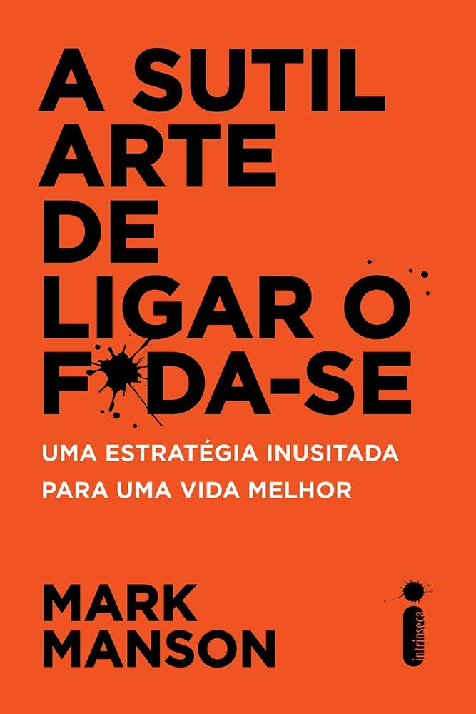

Capítulo 1: Nem tente
Nada contra bons negócios, mas ter necessidades demais faz mal para sua saúde mental. Você acaba se agarrando demais ao que é superficial e falso, dedicando a vida à meta de alcançar uma miragem de felicidade e satisfação. O segredo para uma vida melhor não é precisar de mais coisas; é se importar com menos, e apenas com o que é verdadeiro, imediato e importante.
Na internet, fazemos piadas sobre os problemas do mundo moderno, mas a verdade é que nos tornamos vítimas do nosso próprio privilégio. Problemas de saúde decorrentes de estresse, transtornos de ansiedade e casos de depressão dispararam nos últimos trinta anos, apesar de todo mundo ter uma TV de tela plana e pedir comida em casa. Nossa crise não é mais material; é existencial, espiritual. Temos tanta tralha e tantas oportunidades que nem sabemos mais o que realmente importa.
Sutileza no1: Ligar o foda-se não significa ser invulnerável, mas se sentir confortável com a vulnerabilidade.
Sutileza no 2: Se quiser ligar o foda-se para as adversidades, primeiro você precisa se importar com algo mais importante que elas.
Sutileza no 3: Perceba você ou não, estamos sempre escolhendo o que realmente importa.
Capítulo 2: A felicidade é um problema
Existe uma premissa básica em muitas de nossas conjecturas e crenças. Ela postula que a felicidade é algorítmica, que pode ser buscada, merecida e alcançada como se estivéssemos entrando na faculdade de direito ou montando um complicado conjunto de Lego. Se eu conseguir X, serei feliz. Se eu tiver a aparência Y, serei feliz. Se eu conquistar uma pessoa como Z, serei feliz.
Assim como a dor da queimadura ensina a não tocar o fogão aceso de novo, a tristeza de estar sozinho ensina a não repetir os comportamentos que causaram a solidão. Sentimentos são apenas sinais biológicos criados para empurrar as pessoas na direção de mudanças positivas.
Assim como a dor física, a dor psicológica indica que há um desequilíbrio, que algum limite foi excedido. E, também como a dor física, a psicológica nem sempre é indesejável ou de todo ruim. Em certos casos, passar por dores emocionais ou psicológicas pode ser saudável ou mesmo necessário. Assim como bater o dedão nos treina para esbarrar menos em mesas, a dor emocional provocada por rejeição ou fracasso nos ensina a evitar os mesmos erros no futuro.
Mark Manson é um escritor e blogueiro americano de autoajuda.
Mark Manson foi criado em Austin, Texas, nos Estados Unidos. Ele se mudou para Boston, Massachusetts para estudar e se formou na Universidade de Boston em 2007.
Ele viajou por todo o mundo durante sete anos. Para além da sua atividade de escritor, blogueiro e empreendedor, publica regularmente artigos com a BBC, CNN, Business Insider, Time, entre outros. Vive atualmente em Nova Iorque.
Livros publicados:
- 2011 - Attract Women Through Honesty
- 2016 - The Subtle Art of Not Giving a F*ck
- 2019 - Everything Is F*cked: A Book About Hope
- 2020 - Love is Not Enough
E outros !!
O Livro pode ser adquirido no pelo site da Amazon. Clique na imagem para acessar!!
